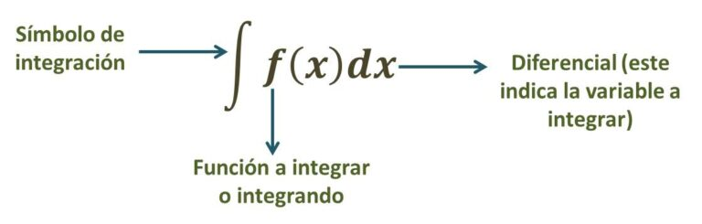

La integral se denota comúnmente con el símbolo ∫, que proviene del latín «sumatoria». La notación completa incluye la función a integrar, los límites de integración y el elemento diferencial, por ejemplo:
La función que se está integrando es el elemento central de la integral. Puede ser una función continua o discontinua en el intervalo de integración.
Este es el diferencial de la variable de integración. En una integral definida, se multiplica la función por este elemento diferencial. Comúnmente se denota como dx en una integral con respecto a x, dy en una integral con respecto a y, etc.
Una suma de Riemann es una aproximación del área bajo la curva, al dividirla en varias formas simples tales como rectángulos o trapecios, permitiendo usarla para encontrar una aproximación numérica en una integral definida.
Cuando hablamos de la historia del calculo integran debemos remontarnos a la época de Arquímedes aproximadamente entre 287 y 212 a.C., este matemático obtuvo los primeros resultados del valor del área encerrada por un segmento parabólico. Pero no es veinte siglos después donde para resolver otros problemas asociados a estudios no concluidos, es que aparecen las derivas asociado a la definición del cálculo infinitesimal creado por Barrow, Newton y Leibniz, dando pie posteriormente a las integrales.